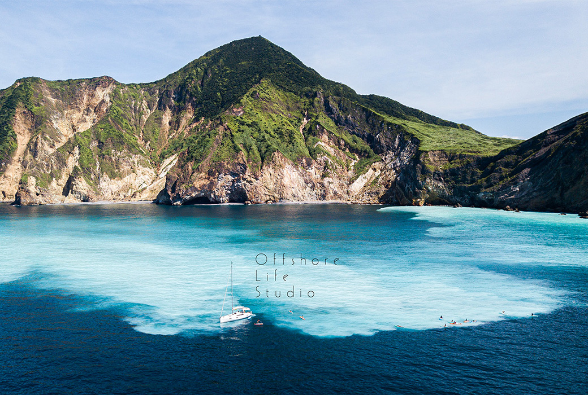

牛奶跟海水交融在龜山島!

編輯部 2020/07/01
龜山島因為地形酷似浮出水面換氣的海龜而得名。他獨特的海域景觀，吸引越來越多自由潛水員不惜犧牲睡眠，也要在清晨坐帆船出航，一睹如夢似幻的牛奶海。看著這等世界級的景色，你是否也好奇，龜山島跟牛奶海是怎麼形成的呢？
台灣傳說中記載著：東海龍王的女兒噶瑪蘭公主，愛上了父親的手下龜將軍，但龍王反對他們之間的戀愛，一怒之下將龜將軍石化困在外海，形成現在的龜山島。噶瑪蘭公主不捨龜將軍，於是化成噶瑪蘭平原，日夜遙望龜山島。
迅速竄升中的絕美景點
牛奶海一帶適合從事水上活動，在這邊可以看見潛水愛好者出沒，近幾年流行的SUP立槳活動近期也十分常見。坐在SUP上休息滑水，伴隨著乳白色的海水，宛如一秒置身馬爾地夫。不過這樣的水上活動較專業，提醒大家務必尋找專業教練協助規劃安排。而因為牛奶海是自然景觀，海水顏色也受到海底溫泉噴發所影響，要拍出夢幻仙氣的美照，也要有一點好運氣才行！